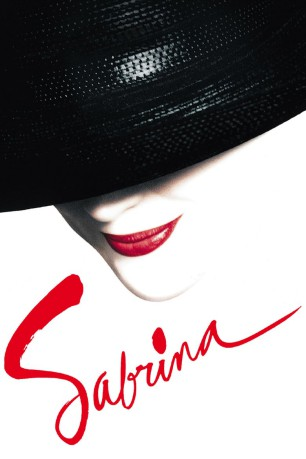

#8958 Sabrina
Auszeichnungen: für 2 Oscars nominiert
 
 IMDB-Wertung: 6.3 / 10
IMDB-Wertung: 6.3 / 10  Tomatometer: 65
Tomatometer: 65  Metascore: 0
Metascore: 0 
Schon als kleines Mädchen hat sich Sabrina unsterblich in David, den jüngsten Sohn der reichen Larabees verliebt. Doch an der Tochter des Chauffeurs war der notorische Playboy nie wirklich interessiert. Dies ändert sich allerdings schlagartig, als Sabrina nach einem längeren Aufenthalt in Paris wieder zurück auf das Anwesen nach Long Island kommt. Das einstige Mauerblümchen hat sich nun in eine selbstbewusste und strahlende Schönheit verwandelt. Und obwohl David kurz vor seiner Hochzeit steht, ist er von Sabrina schier hingerissen. Doch auch sein älterer Bruder Linus (Harrison Ford) macht mit einem Mal Sabrina heftige Avancen. Aus Liebe und Leidenschaft? Oder will der kühle Manager einfach nur Davids Hochzeit und die damit verbundene, dringend erforderliche Firmenfusion retten.
Jahr: 1995
Dauer: 127 Minuten
FSK: 6
Land: Deutschland Studio: Disney ChannelTonspuren:
Untertitel:
Auflösung: 1080p (1920x1080) Größe: 8949 MB
Genre: Drama, Komödie
Regisseur:  Sydney Pollack
Sydney Pollack
Drehbuch: Samuel A. Taylor
Soundtrack: John Williams
Darsteller:
 Harrison Ford als Linus Larrabee
Harrison Ford als Linus Larrabee Julia Ormond als Sabrina Fairchild
Julia Ormond als Sabrina Fairchild Greg Kinnear als David Larrabee
Greg Kinnear als David Larrabee- Nancy Marchand als Maude Larrabee
 John Wood als Fairchild
John Wood als Fairchild Richard Crenna als Patrick Tyson
Richard Crenna als Patrick Tyson Angie Dickinson als Ingrid Tyson
Angie Dickinson als Ingrid Tyson Lauren Holly als Elizabeth Tyson
Lauren Holly als Elizabeth Tyson Dana Ivey als Mack
Dana Ivey als Mack Miriam Colon als Rosa
Miriam Colon als Rosa- Elizabeth Franz als Joanna
 Fanny Ardant als Irene
Fanny Ardant als Irene Valérie Lemercier als Martine
Valérie Lemercier als Martine Patrick Bruel als Louis
Patrick Bruel als Louis Becky Ann Baker als Linda
Becky Ann Baker als Linda Paul Giamatti als Scott
Paul Giamatti als Scott John C. Vennema als Ron
John C. Vennema als Ron Margo Martindale als Nurse
Margo Martindale als Nurse J. Smith-Cameron als Carol
J. Smith-Cameron als Carol Guillaume Gallienne als Assistant
Guillaume Gallienne als Assistant- Inés Sastre als Model
- Phina Oruche als Model
- Carmen Chaplin als Paris Friend
- Peter McKernan als Helicopter Pilot
 Phil Nee als Father in Hospital
Phil Nee als Father in Hospital- Anthony Mondal als Moroccan Waiter
 Eric Bruno Borgman als Airport Employee (uncredited)
Eric Bruno Borgman als Airport Employee (uncredited)- Michael Cline als Head Butler (uncredited)
 Philippe Hartmann als Wedding Guest (uncredited)
Philippe Hartmann als Wedding Guest (uncredited)- Jerry Quinn als Pizza Patron (uncredited)
- Victor Warren als Pilot (uncredited)
- Gregory Chase als Ron
- Christine Luneau-Lipton als Ticket Taker
- Michael Dees als Singer at Larrabee Party
- Denis Holmes als Butler
- Jo-Jo Lowe als Red Head
- Ira Wheeler als Bartender
- Philippa Cooper als Kelly
- Ayako Kawahara als India
- François Genty als Make-Up Assistant
- Helena als Model
- Katia als Model
- Andrea Behalikova als Model
- Jennifer Herrera als Model
- Kristina Kumlin als Model
- Eva Linderholm als Model
- Stefano Tartini als Model
- Micheline Van de Velde als Paris Friend
- Joanna Rhodes als Paris Friend
- Alan Boone als Paris Friend
Datei: X:\1995\Sabrina (1995, FSK6, 1920x1080).mkv seit 16.05.2018
Festplatte: HD 1992-1995
 Es gibt insgesamt 85 Filme in der Gruppe '1995'
Es gibt insgesamt 85 Filme in der Gruppe '1995'